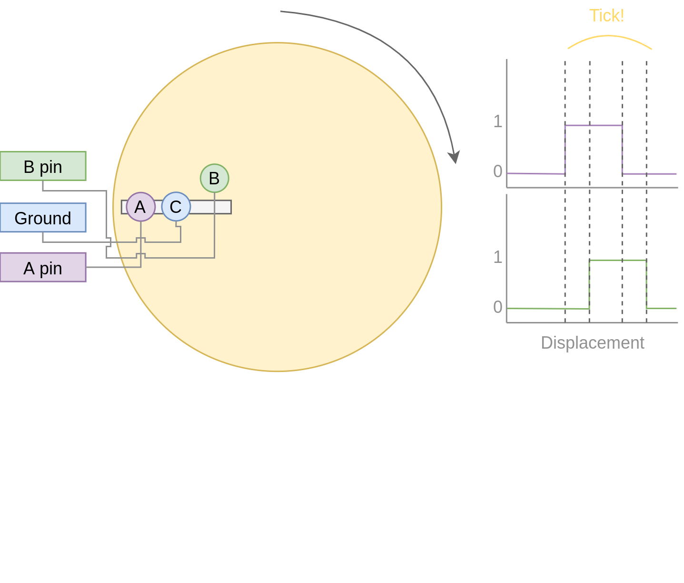

Table of Contents
This is work in progress - the post is updated as I find time to work on it.
1. Introduction
Mechanical keyboards are somewhat of a dated concept that has gathered some speed in more recent years. Back when computers were first coming out for the public, keyboards had mechanical connections that would allow a current to activate a switch. Then as economics got wind, somehow we got used to membrane keyboards; virtually every office in the world has these membrane keyboards. Compared to mechanical keyboards, membrane keyboards feel more “mushy”. In contrast, mechanical keyboards may have different feel based on the springs or whether the key switch has a noticeable “bump”. They can be clicky or not; the possibility are wild now.
A few years ago I started following the subreddit on mechanical keyboards. Back then, the community had little options and cherry still had patents on the switches. Cherry MX keys were virtually found in every commercial keyboard on the market. Now, the landscape has changed quite a bit and more and more different types of switches are available.
Why do I prefer mechanical keyboards? Mechanical keyboards give a “joy” to typing. Membrane keyboards are fine to type on, but they aren’t fun. Generally my fingers get “tired” after typing on membrane keyboards as the keys feel a bit mushy, i.e. you get no relief when pushing down a key and the key press does not feel crisp.
After following / r / mechanicalkeyboards for a while, I decided to build my own keyboard. Within the community, there is a wide variety of switches and shapes of keyboards available. The one I wanted, an orthonormal keyboard, wasn’t commercially available. Plus I liked the idea of building my own keyboard. In my work, the keyboard is my primary tool and why not key a custom version of it for myself. I ended up building 2 handwired versions of 65 percent with 85 switches in a grid layout. In addition, I modded a MagSafe-inspired cable to it which allowed it to be nice and portable. After every build I told myself : “ This is the last one I’ll build”.
Enter this blog, where I again tell myself “this is the last one I build!”. What changed? Since I learned about split-style keyboard, I always wanted one. The keyboards I had made so far weren’t. Split would be completely ergonomical, but unfortunately, none (that I know of) exists that are both (a) wireless and (b) split. As always I aimed to high and wanted to emulate the many features that QMK implements. Most importantly, I wanted to get back into writing more low level languages like c++, and I take this project as a nice opportunity to get into c++ again, and work with micro-controllers.
This post will serve as my log for building the keyboard. The post will updated as I work on it.
Core feature targets
- Split wireless keyboard
- Hot swappable key sockets
- Portable, not a full keyboard
- Battery control
- OLED display
- Rotary encoders
2. Outline
The keyboard is split; it has two halves. The right and left half will have most of the same “base” functionality. Most importantly, each half needs to scan the matrix to obtain which keys are being pressed. One of the halves will act as a server, the other will act as a client. The server will need the following capabilities
Server abilities
- Read matrix
- Setup a bluetooth connection
- HID Device
- Mouse emulation
- Setup connection with client
- Merge keys pressed and send to bluetooth controller
- Control LEDs on both client and server
Client abilities
- Read matrix
- Find server and send pressed keys to server
Due to the heavier load of the server, I prefer to make the role of who is server and who is client dynamic. That is, with some heuristic (for example deep sleep), the roles may switch to prolong batter life of both units.
To give a course overview consider the following picture:

3. ESP32
- I opted for a micro-controller as this would allow me to prototype without worrying about my electronic skills. The controller needed to have battery control, bluetooth, and preferable an energy efficient screen; I ended up with an esp32.
The esp32 is a hybrid chip that has both Wi-Fi and bluetooth capabilities. The esp32 consists of different versions that varies in (mainly) in the number of pins, battery connector, and or screen. The version I ended with (LORA-V2) had a battery connector and a tiny OLED screen.
The ecosystem of ESP32 is well-developed albeit less convenient than its arduino counterparts. Luckily, the opensource community has taken it upon themselves to provide lots of arduino bindings to the libraries by espressif (manufacturer of esp32).
Especially important (as it turned out later) is that the esp32 has the capabilities of using both Wi-Fi and bluetooth low energy simultanaously. In addition, through ESP-NOW, different eps32 modules can form a mesh, which I will harness to do server-client communication.

Figure 1: Pin-out ESP32 LORA-V2
4. Matrix scanning
A keyboard matrix scanning circuit is used to enhance the number of keys, while keeping the number of pins low. A micro-controller uses general pin input/output (GPIO) to register currents. If a singular key switch is wired to a single pin, 96 pins would be needed for a 104 sized keyboard (full-size). This would be unpractical.
As an alternative one could apply matrix scanning. In this method, the keys are wired as a grid where each column connects to each row effectively forming a “switch”. For a total for 100 keys, one would need 10x10 grid. The grid acts as a force multiplier for the number of switches. Instead of needing 100 separate keys, we merely need 10 rows and 10 columns (20 pins) to wire our 100 switch keyboard.
The matrix is repeatedly scanned to determine if a row column form an open circuit. That is, if a key switch is pressed down, current can flow between the row and column. The scanning occurs at a high scan rate, making it seemingly instantaneous.
4.1. Ghosting
Matrix scanning forms an excellent idea to efficiently represent our electronic switches. However, merely scanning does not correctly records all key presses. Under some conditions, a matrix can record ghost keys, i.e. keys that are registered but not pressed. This process is called ghosting.
Ghosting occurs when current can freely flow between separate rows or columns due to another row/column being open. For example consider a simple two row, two column keyboard. This board can support 4 keys. When two keys along the diagonal are pressed, we register 4 keys(!). This is obviously wrong and needs to be corrected. The most common approach is to put a diode right after the switch either on the columns or rows, which prevents current from traversing and causing ghosting.

Figure 2: Ghosting example. Ghosting occurs when current can flow freely across columns and rows. (Left) one key is pressed down bottom left. (Middle) A key across from the first is activated which causes ghosting (right); current flows from the second row, first column to the second row, second column etc.
4.2. Key debouncing
Key debounce is a mechanism to filter out erroneous key activity. When two metal plates come into contact, the signal does not form a clean square wave. In order to clean up this signal, key debouncing is used to reflect the “press” of key switch.
4.3. Changes
-
[X]Added matrix class[X]added matrix scan[X]added key debounce-
[X]added (whole) matrix debounce[X]filters out erroneous key presses
5. ESP-Now
The two halves need to communicate to eachother. There is only one half that is connected through bluetooth to another device. We call this the server, and the other the client. Keys pressed on the client needs to be communicated to the server which processes the keys, and sends it over bluetooth. Luckily, ESP-now offers a mesh interface we can utilize for this purpose. This is easier to setup than a bluetooth mesh interface and should be relatively secure for foreign attackers. From the website we read:
ESP-NOW is yet another protocol developed by Espressif, which enables multiple devices to communicate with one another without using Wi-Fi. The protocol is similar to the low-power 2.4GHz wireless connectivity that is often deployed in wireless mouses. So, the pairing between devices is needed prior to their communication. After the pairing is done, the connection is secure and peer-to-peer, with no handshake being required.
5.1. Mesh interface class
The mesh class is responsible for:
- Setup / deinit the ESP-now connection
- Holding a buffer that is sent over the ESP-now connection. The buffer holds information that needs to be communicated between each halves.
At the moment of writing, the mesh class holds a static buffer which holds `keyswitcht`. These are structs containing when the last time the pins were read as active. In addition, it contains information on the source and sinc pins, and column and row indices. These last two are used to index into the final keymap on the server side. This way, no actual key information is send, but the server reads the key from the col and row, then they are combined. This solves the issue of sending ascii shifted codes or media keys.
5.2. Changes
[X]Implemented mesh interface class[X]Added server capabilities to join the keys from both half and communicate through bluetooth
6. Modifier keys
My initial implementation measures the onset of keys. That is, debounce worked by measuring when the “square wave” of the key was pressed. This allows for fast and accurate detection detecting key press down. Initially my intentions was to merge the other keys together such that multiple keys are registered at the same time. For example, the shift key needs to register two keys at minimum to shift the ascii code around for let’s say `a` to `A`.
Consequently, I need to both register the key press down as well as the key release; I modified the debounce mechanism to also detect the key release.
6.1. Changes
[X]Change key detection. Register key press and key release[X]Mesh buffer management is moved out of the keyboard class.[X]Fixed wrong indexing in reading the active keys on the server.
7. Bluetooth
Bluetooth is rather complicated. The Bluetooth Keyboard class takes care of most of the heavy lifting. Key codes have an associated ascii code, these are put into an ascii code map. Note that the over bluetooth (for whatever reason) these keycodes are remapped to different numbers.
7.1. Changes
[ ]Expand this section with info on characteristics and services.[X]Figure out how the key codes are organized The symbols are organized in a 128 ascii keymap containing the hex codes to a symbol. Hex codes can be send directly in addition to normal strings over bluetooth. The modifier keys in combination with some media control keys are defined in “BleKeyboard.h”, the ascii map is in “BleKeyboard.cpp”. I have written a short wrapper in “keydefintions.hpp”.-
[X]Add functions for interfacing with bluetooth to the keyboard class[X]Pressing down keys[X]Releasing keys
[ ]Convert config class to static class-
[-]Write layer keymap for keyboard[X]Wrote qwerty base layer[ ]Add fixed array check to the layers (add to constant config class steps)
8. Keyboard layers
A layer is implemented as a 2D vector for the moment, but will likely change in finalizing the keyboard. An active layer is set as a pointer to the current active layer. Each keyswitch has information on where in the grid they fit; keys are read by using these indices in the 2D vector. I did consider an unorderedmap use the keyswitch directly as an indicator. This could then be combined with pointers to make a layer dynamic, i.e. instead of having the concept of layers, each key has a different layer that can be accessed. This adds some complexity and I decided against this. The main reason is that the client side would then need to store information on what each keyswitch points to. This would increase communication between each halves if modifiers are used for example. I am afraid that this added communication is not as trivially solved, i.e. one needs to send modifier key across ESP-NOW and then shift all affected keys and when activated send this information back. The ESP-NOW channel is not designed for high information throughput.
The keyboard is not going to be full size. That is, purely based on the number of keys, this keyboard will not be able to have a 1-to-1 mapping from symbol to keyswitch. Luckily, we can greatly increase the number of symbols on the keyboard by hosting the missing symbols on different layers. This means we have to implement a feature that allows one to switch between different layers. For example we may implement a layer up and layer down key, or allow to switch directly between different layers. In QMK is worked out by an `enum struct`. Layers are stacked on top of each other. This has the added feature of allowing a “transparent” key to access on a layer below. I wish to emulate this feature.
I currently host my key layer as a 2d vector. In finalizing my build this may change to a fixed array size. As vectors can be arbitrary sized, I need to add a check to the vectors to not allow uses to define oddly sized arrays (which would lead to seg faults). This will be added to the finalized checks.
In QMK layers are `enum` type, which means the layers are number and tracked through an int. Here, I will have an `activelayer` which points to the `layert` hosting the current active keys. With transparent keys I can imagine that this approach will not work.
8.1. Changes
-
[ ]Implement key layers-
[ ]KCTRANS accesses key below the current layer[ ]This effect may stack until a non-transparent key is found-
[ ]Layer switch keys[ ]Up and down
[ ]Hold layer switch key: similar to modifier keys, these keys temporarily shift the key layer while holding down this key.
-
9. Rotary encoder
The keyboard has two rotary encoder (one on each halves). The encoders I added were mostly as a gimmick, but can be used as slider controls for volume control and or scrolling.

Figure 3: (left) Schematic rotary encoder. The A and B pin are 90 degrees out of phase and produce a quadrature signal (right). In the rest state both A and B pin register 0. The quadrature encoding for the A and B pin are given in encoder_scheme.
The rotary encoder has two pins that are shifted 90 degrees out of phase (see figure fig:encoder). Each click produces a quadrature signal that is fixed. Unknowingly I bought encoders that are extremely noisy (KY-040). When the encoder clicks, contacts are moved across a terminal. The signal produced are ideally two square offsets by 90 degrees. In practice however, the signal debounces and produces more signal. They are three traditional ways of taming noisy signals
- Hardware filtering
- Digital filtering
- Decoding
I don’t know much about the first method or last method. I initially tried method 2, i.e. measuring the pins, waiting for some time and measure again. This however did not correctly measure the rotations. I tried multiple libraries that used interrupt routines that did not end up correctly measuring the clicks of the encoder. Finally I found this blog post which highlighted exactly the problem with the KY-040. The decoder method worked like a charm, but took some time to figure out. Below is the exploration I had trying to figure out how this code worked.
9.1. Taming the KY-040 with decoding
The quadrature signal per click produces a fixed output for either clockwise or anti-clockwise rotation. The encoder can be thought of as a fixed state machine that moves between different states (table_transition).
| Current state | New state | Direction | ||
|---|---|---|---|---|
| A pin | B pin | A pin | B pin | |
| 1 | 1 | 0 | 1 | clockwise |
| 0 | 1 | 0 | 0 | clockwise |
| 0 | 0 | 1 | 0 | clockwise |
| 1 | 0 | 1 | 1 | clockwise |
| 1 | 1 | 1 | 0 | anti-clockwise |
| 0 | 1 | 1 | 1 | anti-clockwise |
| 0 | 0 | 0 | 1 | anti-clockwise |
| 1 | 0 | 0 | 0 | anti-clockwise |
In practice however, a noisy rotary encoder will also output some state transitions that are not allowed, e.g. 11->00. In order to correctly read which direction the rotary encoder was turned in, a digital filter can be used. A simple filter would be something like
\[ signal = (signal << 1) | digitalRead(A_{pin}) | 0xF000\]
A signal is only read if the integer value reaches the all ones state, then resets and waits again. Trying this method did not end well for me. I ended up using sequence decoder; the pattern are listed in encoder_scheme.
We can group the current state and new state as a 4 bit number, i.e. \(\\{a, b, a', b'\\}\) where \(a\), \(b\) are the current state of the A and B pin and \(a'\), \(b'\) are the new state of the A and B pin. This implies that 24 = 16 state transitions are possible and we only allow for 8 of these to occur (see table table_transition).
| state (bit mask) | Allowed | Direction | State |
|---|---|---|---|
| 0000 | False | 0 | |
| 0001 | True | clockwise | 1 |
| 0010 | True | anti-clockwise | 2 |
| 0011 | False | 3 | |
| 0100 | True | clockwise | 4 |
| 0101 | False | 5 | |
| 0110 | False | 6 | |
| 0111 | True | anti-clockwise | 7 |
| 1000 | True | anti-clockwise | 8 |
| 1001 | False | 9 | |
| 1010 | False | 10 | |
| 1011 | True | clockwise | 11 |
| 1100 | False | 12 | |
| 1101 | True | clockwise | 13 |
| 1110 | True | anti-clockwise | 14 |
| 1111 | False | 15 |
| Bitmask | Hex | Direction |
|---|---|---|
| 0001 0111 | 0x17 | clockwise |
| 0010 1011 | 0x2b | anti-clockwise |
9.2. Changes
[X]Add rotary encoder to keyboard class
10. OLED Display
10.1. Changes
[ ]Start creating interface for display management-
[ ]Find interesting functions to put on the screen[ ]WiFi notifications?-
[ ]Keyboard status info[ ]Keyboard layer info[ ]Battery level info
11. Battery control
11.1. [-] Deep sleep
When not in use I aim to put the keyboard in deep sleep. Some pins on the esp32 can be used to wakeup the keyboard from deep sleep. The RTCGPIO pins and Touch pins can be used for waking the device from deep sleep. The RTC pins are
| RTC Pin | GPIO | Comment |
|---|---|---|
| RTC GPIO12 | GPIO02 | had issues with encoder |
| RTC GPIO10 | GPIO04 | OLED SDA |
| RTC GPIO15 | GPIO12 | |
| RTC GPIO14 | GPIO13 | |
| RTC GPIO16 | GPIO14 | |
| RTC GPIO13 | GPIO15 | OLED SLK |
| RTC GPIO9 | GPIO32 | input only |
| RTC GPIO8 | GPIO33 | input only |
| RTC GPIO4 | GPIO34 | input only |
| RTC GPIO5 | GPIO35 | input only |
| RTC GPIO0 | GPIO36 | input only |
| RTC GPIO3 | GPIO39 | input only |
| RTC GPIO6 | GPIO25 | |
| RTC GPIO7 | GPIO26 | |
| RTC GPIO17 | GPIO27 | |
| RTC GPIO11 | GPIO00 | button pin(?) |
The set GPIO12/13/14/25/26/27 could form a set for which all the columns or rows will have a key that is connected to deep sleep; this would mean either the rows or the columns are connected to a pin that is reachable from deep sleep. I will have to run some experiments if that could allow the keyboard to wake up from deep sleep, i.e. if the the column or row is not active I wonder if the the current will be low, i.e. if the pins are in deep sleep and a small current is tested on the active pins (set above), does the current go from HIGH to LOW? Alternatively, I could connect the pins to the set 3x range only for deep sleep mode.
There are two sleep modes; light sleep and deep sleep. For light sleep the internal state of the system is preserved, which is not the case for deep sleep. This would mean that for deep sleep the keyboard effectively reboots.
11.2. Changes
[ ]Implement battery control[ ]Implement deep sleep
12. Backlog and weird behavior notes
- Pressing down a key repeatedly and then another key afterwards, stops sending the initially pressed down key. For example holding down `a` and then pressing any other key (including modifies) stops sending `a`.
- Figure out bug where `-` is sent repeatedly. This occurs especially when sending `a` key. I think it is related to the ascii code for for `a` and `-`.
- Figure out bug where ’up arrow’ is sent repeatedly. This occurs when the keyboard is connected to bluetooth. No keys are send on my part.
- Connecting the rotary encoder to GPIO1, GPIO3 causes odd symbols to appear when rotating. In addition, when set in a particular condition it will cause the rotary encoder to fail to upload code. This effect is gone with an additional turn. Apparently, the esp32 has some flaw in it that some pins are sensitive to inputs when uploading code. More info can be found here https://github.com/espressif/arduino-esp32/issues/1497. I have changed pin 1 to pin 2 which seemed to have fixed the issue.
13. Final checklist
Check that the following components work:
-
[ ]Matrix[ ]Does scanning work?[ ]Does ghosting occur?
-
[ ]ESPNOW[ ]Does the wireless bridge work?
-
[ ]Bluetooth[ ]Is the unit detected as a keyboard?
-
[ ]Rotary encoder[ ]Are single ticks detected?[ ]Are both positive as well as negative clicks detected?[ ]Does the esp32 flash irregardless of the rotary encoder position?
-
[ ]LEDs[ ]Can colors be encoded?[ ]No shorting to ground?
-
[ ]Display[ ]Do they display the GUI?
-
[ ]PCB[ ]Are all the components connected?[ ]Is the ground plate present?[ ]Are the pins present with enough clearance?
-
[ ]Software hardware interface[ ]verify that no pins are used that will cause issues, for example input pins in the 3x range.